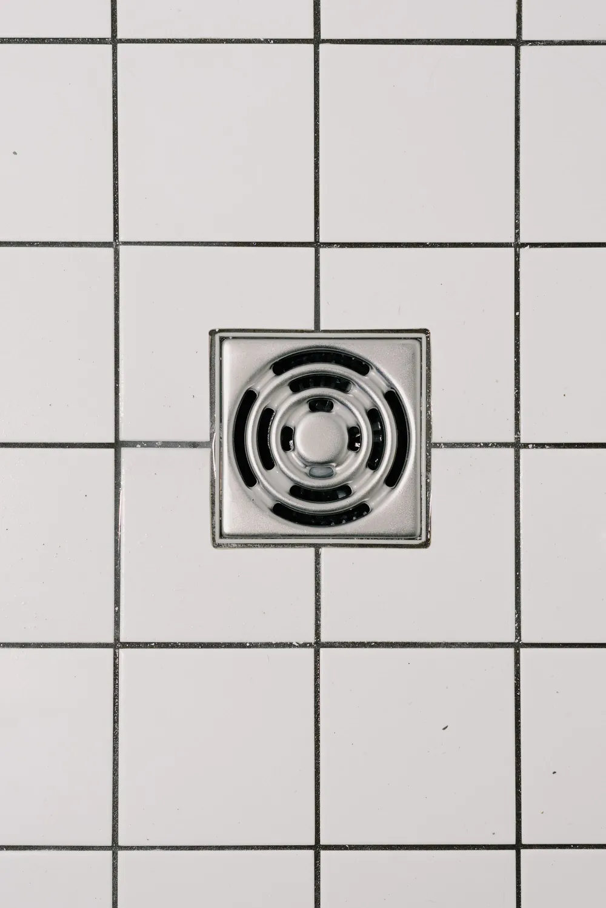

Duguláselhárítás árak SalgótarjánbanSzolgáltatások és árak
Előre tudja, mire számíthat. Salgótarjánban és 20 km-es körzetében a kiszállás ingyenes, 20 km felett csak az üzemanyag árát kérem.
| Szolgáltatás | Ár |
|---|---|
| Mosogató-duguláselhárításKonyhai lefolyó, szifon, a fali bekötésig. | 25 000-35 000 Ft |
| Fürdőszobai duguláselhárításKád, zuhanytálca, mosdó, padlóösszefolyó. | 25 000-35 000 Ft |
| WC-duguláselhárításFeljövő víz, rossz lehúzás, beleesett tárgy. | 30 000-45 000 Ft |
| Woma-csatornatisztításNagynyomású vízzel, a lerakódást is kimossa a cső faláról. | 50 000-75 000 Ft |
| Szennyvízcsatorna-kamerázásMegmutatja, hol és mi okozza a dugulást. | 5 000 Ft-tól |
Irányárak. A díj attól függ, mi és milyen mélyen dugult el.
Nem biztos benne, melyik az Öné?
Mondja el telefonon, mi történt.
06 20 292 2730Éjjel-nappal hívható, hétvégén is.

Ami minden munkával jár
- Kiszállás
- Salgótarjánban és 20 km-es körzetében ingyenes, 20 km felett csak az üzemanyag árát kérem. 70 km-es körzetben vállalom a munkát.
- Bontás nélkül
- Gépi spirállal és magasnyomású womával dolgozom.
- 6 hónap garancia
- Az elvégzett munkára fél év garanciát vállalok.
- 0-24 ügyelet
- Éjjel, hétvégén és ünnepnapon is felveszem a telefont.
- Számla
- Cégeknek számlát adok.
Gyakori kérdések a duguláselhárításról
Mennyibe kerül a duguláselhárítás?
Irányárak: mosogató 25 000-35 000 Ft, fürdőszoba 25 000-35 000 Ft, WC 30 000-45 000 Ft, woma-csatornatisztítás 50 000-75 000 Ft, csatornakamerázás 5 000 Ft-tól. A díj attól függ, mi és milyen mélyen dugult el.
Mennyibe kerül a kiszállás?
Salgótarjánban és 20 km-es körzetében a kiszállás ingyenes, 20 km felett csak az üzemanyag árát kérem. Salgótarján 70 km-es körzetében vállalom a munkát.
Kell bontani a duguláselhárításhoz?
Nem. Bontás nélkül dolgozom, gépi spirállal és magasnyomású womával. A gépeimről itt olvashat.
Éjjel és hétvégén is kijön?
Igen, 0-24 hívható vagyok, éjjel, hétvégén és ünnepnapon is: 06 20 292 2730. Akár egy órán belül a helyszínen vagyok.
Van garancia a munkára?
Igen, az elvégzett munkára 6 hónap garanciát vállalok.
Cégeknek is dolgozik?
Igen, cégeknek és intézményeknek is dolgozom, számlát adok.